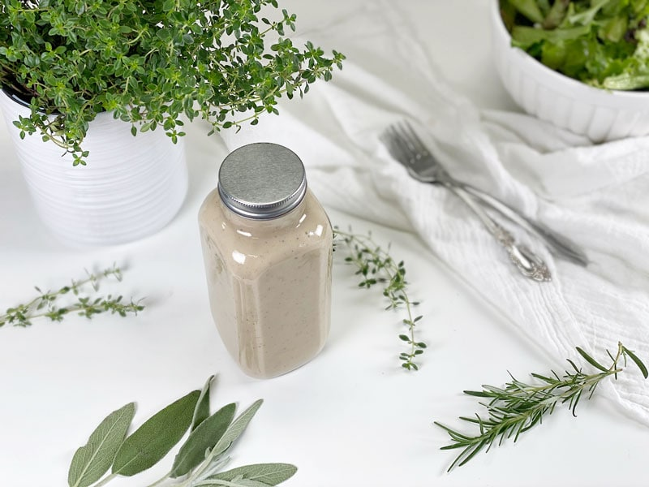
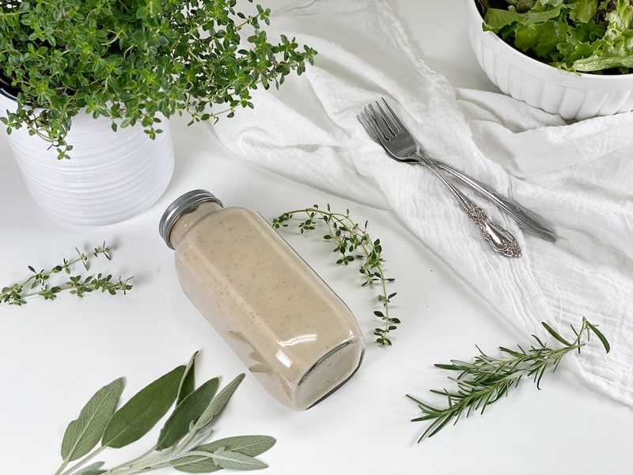
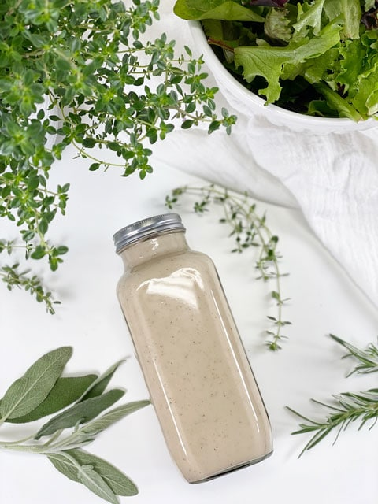

Creamy Dijon Dressing | Oil-Free | Nut-Free
I am here today to share a recipe with you that has become a household staple. When I first created this recipe, I served it drizzled over freshly steamed veggies. However, I held back what it was made from until I got the approving nod from Bob. He knows that right now, I am omitting overt fats from my diet, so he asked me many times, “This doesn’t have any fat in it?” I don’t think he believed me. Finally, I let him in on the secret ingredient…beans. Throughout the meal, he kept adding more and more of the dressing to his veggies. I will take that as a win!

Since then, I keep a bottle of this in the fridge, and I find we put it on almost everything we eat. If you don’t care for the flavor of mustard, this may not be the dressing for you. But then again, maybe you should give it a try…tastes do change!
When it comes to beans, have you ever looked through a recipe and seen “white beans” listed? What white bean are they referring to? It could be one of the following; navy beans, great northern beans, cannellini beans, or baby lima beans. So which one are they using? The reality is that even though the different varieties have slightly different flavors and sizes, they’re often used interchangeably in recipes.
Navy Beans
- Navy beans are also called pea beans.
- They are small, oval-shaped, and quick-cooking.
- They become creamy when cooked, making them perfect for mashing, puréeing for dips, acting as a thickener in soups, stews, and more.
- They have a mild flavor
- Navy beans are high in fiber, coming in at 19 grams per cup!
Great Northern Beans
- Great northern beans are known for their mild, nutty flavor and firm flesh.
- Great in soups and stews, they hold their shape better than navy beans.
- They take on the flavors of the foods they’re cooked with.
Cannellini Beans
- Cannellini beans are the largest of the group, and because of their traditional kidney shape, they can also be referred to as white kidney beans.
- Meatier than navy or great northern beans, they have a nutty, earthy flavor and tender flesh.
- They retain their shape and texture well, so they’re perfect to use in salads, soups, stews, and chili.
Baby Lima Beans
- Also known as butter beans.
- Baby lima beans are small, smooth, and creamy with a rich, buttery texture.
- They’re starchier than other beans and are often used in soups, stews, and casseroles, or just cooked simply with herbs and spices.

Make Every Bite Count
- Use organic ingredients, if possible.
- Try to use beans that you soak and cook yourself. They will be easier on your digestion and internal pipe organ. (Oh, I crack myself up!)
- Food for thought–approach each meal with an attitude of gratitude. How lucky am I to have such abundance and variety in my meal options? How lucky am I to have a fully functioning digestive system that knows exactly what to do with all this fantastic food?!
So choose your bean, grab a blender, and let’s get busy! For reference, I used cannellini beans this time around. I just love the creamy texture they give the dressing. Bob had several servings of it on his baked potato. For serving ideas, use this dressing on salads, steamed veggies, and baked potatoes. I hope you enjoy the recipe, comment below. Blessings, amie sue

Ingredients
Yields 2 cups
- 1 (15 oz) can white beans, drained & rinsed
- 3 Tbsp dijon mustard
- 2 Tbsp lemon juice
- 2 tsp coconut vinegar
- 1/2 tsp garlic powder
- 1/4 tsp onion powder
- 1/4 tsp sea salt
- 3/4 cup water (more if you need to thin the dressing)
- 8 Stevia drops or another sweetener of choice
Preparation
- Combine the beans, mustard, lemon juice, coconut vinegar, garlic and onion powder, salt, water, and sweetener into the blender and blend on high for 30 seconds or until ultra-creamy.
- You can use any type of vinegar if you don’t have coconut vinegar on hand.
- If you use regular mustard, add only 2 tablespoons and taste-test, then add more if needed. Regular mustard is much more robust in taste than dijon.
- Store in the fridge for 3-5 days.
© AmieSue.com